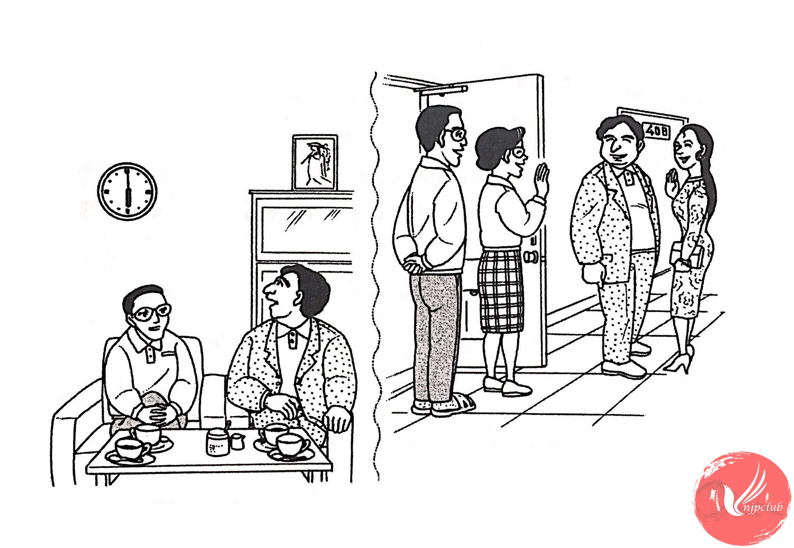

| 山田一郎： |
マリアさん、 日本の 生活は どうですか。 |
| マリア・サントス： |
毎日 とても 楽しいです。 |
| 山田一郎： |
そうですか。サントスさん、お仕事は どうですか。 |
| ジョゼ・サントス： |
そうですね。忙しいですが、おもしろいです。 |
| ‐ ‐ ‐ ‐ ‐ ‐ ‐ ‐ ‐ ‐ ‐ ‐ ‐ ‐ ‐ ‐ | |
| 山田友子： |
コーヒー、もう 一杯 いかがですか。 |
| マリア・サントス： |
いいえ、けっこうです。 |
| ジョゼ・サントス： |
あ、もう 6時ですね。そろそろ 失礼します。 |
| 山田一郎： |
そうですか。 |
| マリア・サントス： |
きょうは どうも ありがとう ございました。 |
| 山田友子： |
いいえ。また いらっしゃって ください。 |